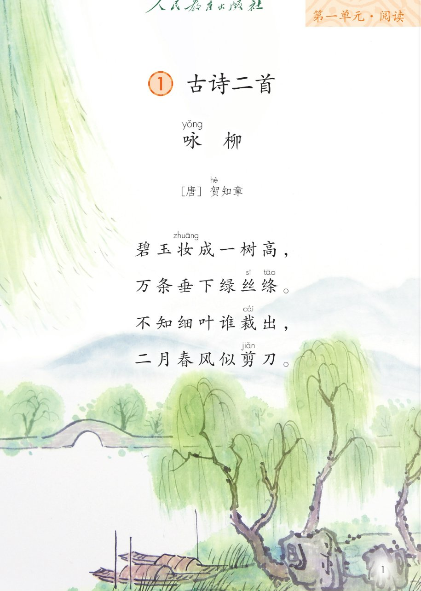
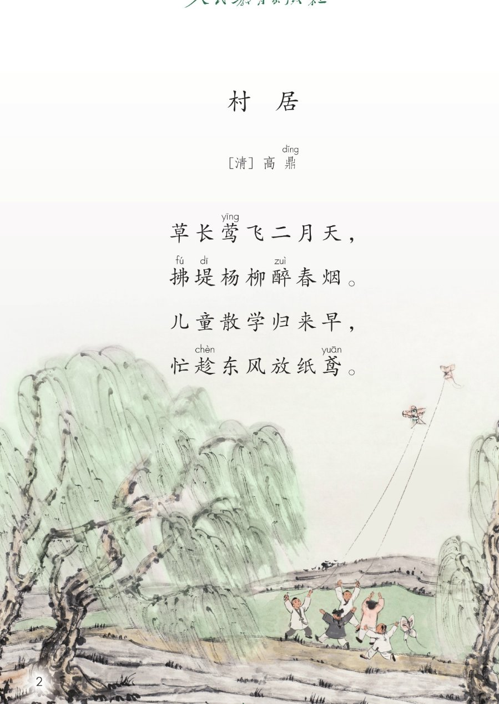
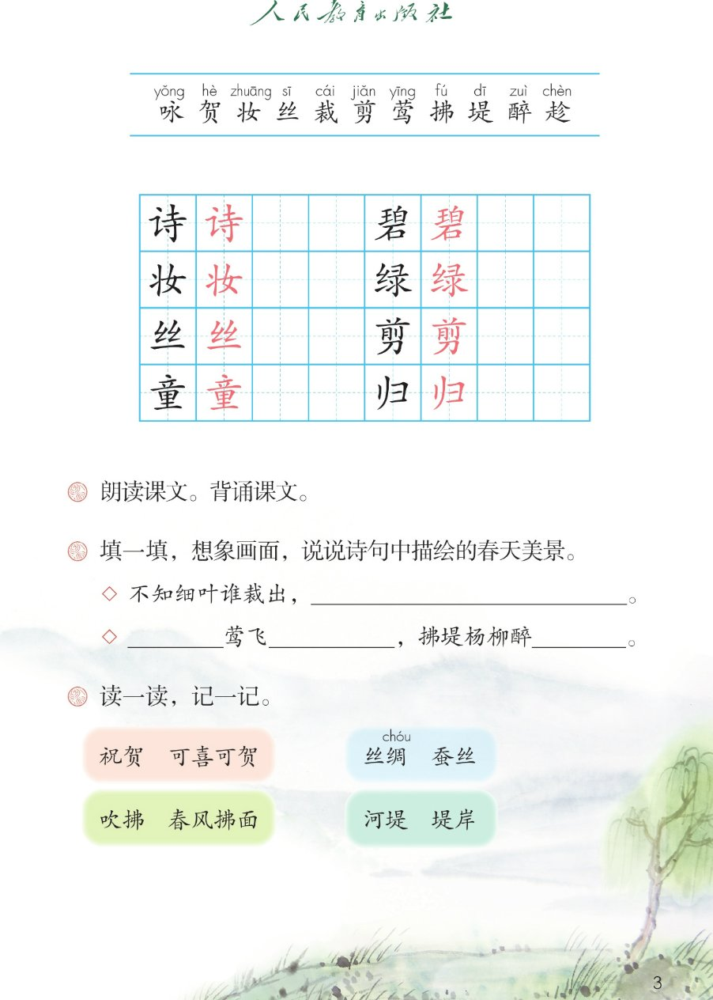

×
🔊 手机听不到声音怎么办？
① 先把手机
媒体音量调大 ，确认没开静音、没连蓝牙耳机；在微信里打开的，点右上角「⋯ → 用浏览器打开」。
② 还是没声音？到应用商店免费下载
Microsoft Edge 浏览器 （它自带朗读发声），用它打开本页面就能出声。
③ 换了 Edge 仍然没声音，说明这部手机的
硬件/系统不支持 网页朗读（多为老旧机型）；近几年买的新手机一般都能正常播放。
→ 打开声音自检
🌿 第 1 课《古诗二首》· 有声图文带读
统编版语文 · 第一单元·阅读 · 课本 第 1~3 页 · 作者：唐 贺知章 · 清 高鼎
古诗 2 首 · 共 8 句
会认字 11
会写字 8
听写词 10
近义词 4 组
深入理解 8 题
本课本领 朗读·背诵·想画面
🎧 五步学（可随时点任意一句、一个字、一个词单独听）： ① 听读课文 ——一句一句读，读到哪一句哪一句发光；开「跟读」后读完一句留时间让你自己读。② 学字词 ——11 个会认字、8 个会写字（含书写提示），点一个读一个。③ 词语·听写·造句 ——先读课后「读一读，记一记」和填一填，再听写 10 个词（读两遍→你写→报答案→听示范句），最后听 4 组近义词辨析。④ 深入理解 ——8 道题（认知 / 理解 / 运用 / 拓展），开放题答案不唯一，先想后看。⑤ 背诵闯关·分角色 ——按五步把两首背下来，再听贺知章和高鼎各诵自己写的诗。
📚 本册第一单元·阅读（照课本目录）： 1 古诗二首 → 2 找春天 → 3 开满鲜花的小路 → 4 邓小平爷爷植树 → 语文园地一
点诗前的 ①② 听整首
🔁 跟读模式：关
👁 隐藏注音（自测用）
注音只标本课要认、要写的字和课本明确标了音的字，读音来自课本第 3 页生字表
🎤 朗读要求（老师标准） 草长 莺飞的「长」读第三声（生长）；「似 剪刀」的似读第四声；绦 、鸢 都读第一声；古诗的节奏 ：碧玉妆成／一树高；草长莺飞／二月天（四字一顿）；不添字、不漏字 ：逗号停得短，句号停得长，一句一句读清楚；边读边想画面 ：先看高高的柳树和垂下的柳条，再看河堤、春烟和放纸鸢的孩子；春天的高兴 ：最后一句「忙趁东风放纸鸢」读得轻快、往上扬。
①
咏yǒng 柳 [唐] 贺hè 知章
碧bì 玉妆zhuāng 成一树高，万条垂下绿lǜ 丝sī 绦tāo 。
不知细叶谁裁cái 出，
二月春风似剪jiǎn 刀。
📌 这首诗讲 ：高高的柳树像碧玉妆扮而成，垂下的柳条像绿丝带；细叶谁裁出？原来二月春风似剪刀。
②
村 居 [清] 高鼎dǐng
草长莺yīng 飞二月天，
拂fú 堤dī 杨柳醉zuì 春烟。儿童tóng 散学归guī 来早，
忙趁chèn 东风放纸鸢yuān 。
📌 这首诗讲 ：二月草长莺飞，杨柳拂堤；小朋友放学回来得早，忙着趁东风放纸鸢（纸鸢就是风筝）。
🤔 想一想（点我可跳过）
点一张图，听读整页

第 1 页 · 课题与《咏柳》全诗

第 2 页 · 《村居》全诗与放纸鸢插图

第 3 页 · 生字表与课后题
📖 人教版《语文》二年级下册 · 课本第 1~3 页 · 图片仅供个人学习，版权归人民教育出版社所有
点一个字，听读音、词语和课文里的句子
结构、部首、笔画与书写提示为通用规范，供参考，以教材和老师的指导为准
诗
shī
古诗 · 诗人
8 画 · 左右（讠）
左窄右宽，寺的上土下寸要对齐
碧
bì
碧玉 · 碧绿
14 画 · 上下（石）
上王白下石，三部分写扁，最后一横托住
妆
zhuāng
化妆 · 梳妆
6 画 · 左右（女）
左丬窄、右女宽，女的横要写平
绿
lǜ
绿色 · 碧绿
11 画 · 左右（纟）
左窄右宽，右下不是水，撇点要分开
丝
sī
丝带 · 蚕丝
5 画 · 上下（一）
两个幺并排写小，底下长横稳稳托住
剪
jiǎn
剪刀 · 剪纸
11 画 · 上下（刀）
上前的横最长，下刀写扁托住上部
童
tóng
儿童 · 童话
12 画 · 上下（立）
上立下里，里字中间一横最长
归
guī
归来 · 回归
5 画 · 左右（彐）
左竖撇短、右彐扁，右竖要写直
点一行，听词语和课后题的答案
📖 课后题（课本第 3 页照录） ：① 朗读课文。背诵课文。 ② 填一填，想象画面，说说诗句中描绘的春天美景。 ③ 读一读，记一记。
祝贺 祝贺 可喜可贺
丝绸 丝绸 蚕丝
吹拂 吹拂 春风拂面
河堤 河堤 堤岸
填一填 1 不知细叶谁裁出，二月春风似剪刀 。
填一填 2 草长 莺飞二月天 ，拂堤杨柳醉春烟 。
读两遍 → 你在纸上写 → 报答案 → 听示范句
准备听写 · 共 10 个词
○ ○ ○
点下面的「开始听写」，听到一个词就写一个词。
▶ 开始听写
🔁 再读一遍
👁 看答案
点词听读，点句子听示范句，再自己说一句
1 古诗 会写字 · 诗
示范句：今天我们学了两首古诗。
✏️ 我也能说：谁 + 学了两首古诗
2 碧玉 诗中的词 · 碧
示范句：高高的柳树像用碧玉打扮起来的。
✏️ 我也能说：什么 + 像碧玉
3 化妆 会写字 · 妆
示范句：柳树好像刚化过妆，绿得发亮。
✏️ 我也能说：什么 + 好像化过妆
4 绿色 会写字 · 绿
示范句：春天来了，田野一片绿色。
✏️ 我也能说：哪里 + 一片绿色
5 丝绸 课后词语 · 丝
示范句：这条丝绸围巾又软又亮。
✏️ 我也能说：什么 + 是丝绸做的
6 剪刀 会写字 · 剪
示范句：二月春风好像一把剪刀。
✏️ 我也能说：什么 + 好像一把剪刀
7 儿童 会写字 · 童
示范句：儿童散学归来早，忙着去放纸鸢。
✏️ 我也能说：儿童 + 在做什么
8 归来 会写字 · 归
示范句：傍晚，同学们从学校归来。
✏️ 我也能说：谁 + 从哪里 + 归来
9 河堤 课后词语 · 堤
示范句：河堤上的杨柳发芽了。
✏️ 我也能说：河堤上 + 有什么
10 吹拂 课后词语 · 拂
示范句：春风轻轻吹拂着柳条。
✏️ 我也能说：什么 + 吹拂着 + 什么
相同点 / 不一样在哪 / 各造一句
归来 — 回来
相同：都表示回到原来的地方 。
不一样：归来 是诗里、书面上用的词，读起来有诗意；回来 是平时说话用的。课文里说：儿童散学归来早。
归来：儿童散学归来早。
散学 — 放学
相同：都表示上完课回家 。
不一样：散学 是古时候的说法，诗里才这么写；放学 是我们现在说的话。
散学：儿童散学归来早。
碧绿 — 翠绿
相同：都写很绿的颜色 。
不一样：碧绿 偏青、发亮，像玉的颜色；翠绿 偏鲜嫩，像刚长出来的新叶。
碧绿：柳叶碧绿碧绿的。
似 — 像
相同：都表示好像 。
不一样：似 多用在古诗里，读起来短；像 是口语，平时说话天天用。课文里说：二月春风似剪刀。
似：二月春风似剪刀。
春天的景物 草 莺 杨柳 春烟 东风 纸鸢
写颜色的词 碧玉 绿丝绦 碧绿 翠绿
诗里的比喻 碧玉（柳树） 绿丝绦（柳条） 剪刀（春风）
动作的词 妆 垂 裁 剪 拂 醉 放 归
标「答案不唯一」的题，说得有道理都对
认知 《咏柳》和《村居》各是谁写的？两首诗写的都是哪个季节？看解析
🤔 想一想
解析：
咏柳下面写着唐，贺知章；村居下面写着清，高鼎。
两首诗里都出现了二月：二月春风、二月天。
同一个季节，一位写柳树，一位写放风筝的小朋友。
认知 课后题「填一填」：不知细叶谁裁出，＿＿＿＿；＿＿莺飞＿＿＿，拂堤杨柳醉＿＿＿。横线上该填什么？看解析
🤔 想一想
解析：
不知细叶谁裁出，二月春风似剪刀。
草长莺飞二月天，拂堤杨柳醉春烟。
先有草和黄莺，再有河堤上的杨柳，最后才是放纸鸢的孩子。
理解 「碧玉妆成一树高，万条垂下绿丝绦」把柳树和柳条比作了什么？看解析
🤔 想一想
解析：
写整棵树又高又绿，像玉一样亮。
写一条条垂下来的柳枝，又细又软又多。
打比方以后，看不见的春天就变成看得见的颜色和样子了。
理解 「二月春风似剪刀」，春风真的会剪东西吗？诗人为什么这样说？看解析
🤔 想一想
解析：
不知细叶谁裁出，诗人在问是谁裁的。
二月春风似剪刀，诗人自己回答了。
春风看不见，剪刀看得见，一想就有了画面。
理解 「拂堤杨柳醉春烟」的「醉」是喝醉了吗？「忙趁东风放纸鸢」的「忙」又写出了什么？看解析
🤔 想一想
解析：
写枝条软、摇得慢，不是真的喝酒。
写孩子心里急、脚步快、特别想玩。
前半首写景静，后半首写人动，诗就活了。
运用 课后题：想象画面，用自己的话说说诗句中描绘的春天美景。看解析
🤔 想一想
解析：
草、莺、杨柳、河堤、春烟、东风。
儿童散学归来早，忙趁东风放纸鸢。
热闹、轻快、心里高兴。
🌈 答案不唯一，说得有道理都对
运用 照样子用「好像 / 似 / 像」说一句话，说说春天里的一样事物。看解析
🤔 想一想
解析：
二月春风似剪刀，诗人把春风比作剪刀。
柳条、燕子、迎春花、小雨，都可以。
说一句为什么像，句子就更完整。
🌈 答案不唯一，说得有道理都对
拓展 《咏柳》和《村居》都写春天，你更喜欢哪一首？说说你的理由。看解析
🤔 想一想
解析：
柳树绿、比喻巧，读完像看见一幅画。
有小朋友、有风筝，读着热闹又开心。
一首静、一首动，合起来才是完整的春天。
🌈 答案不唯一，说得有道理都对
点一步，听这一步
4
《村居》四句
💬 背诵支架：先 大声读三遍 → 再 看着每句的头两个字背 → 接着 合上书一句一句往下接 → 最后 两首连起来背给同桌听。
点一个角色，听他读的那几句
🌿 贺知章·看柳树
“碧玉妆成一树高，”
💬 读得亮、往上扬 ，像抬头看见一棵高高的绿柳树
🌿 贺知章·赞柳条
“万条垂下绿丝绦。”
💬 声音往下落 ，读出柳条又多又软地垂下来
🌿 贺知章·问细叶
“不知细叶谁裁出，”
💬 「谁」字稍稍提起，句尾上扬，读出好奇
🌿 贺知章·答春风
“二月春风似剪刀。”
💬 读得肯定、轻快 ，像忽然想明白了
🪁 高鼎·写春景
“草长莺飞二月天，拂堤杨柳醉春烟。”
💬 前句轻快 ，后句慢一点 ，「醉」字读得软
🪁 高鼎·写儿童
“儿童散学归来早，忙趁东风放纸鸢。”
💬 「忙」字读得急 ，「放纸鸢」往上扬，读出高兴